Siguiente: Dilatación Subir: Fundamentos teóricos Anterior: Fundamentos teóricos Índice General
El lenguaje de la morfologÃa matemática es el de la teorÃa de conjuntos y la misma representa objetos en las imágenes. Por ejemplo, el conjunto de todos los pÃxeles negros en una imagen binaria es una descripción morfológica completa de la imagen. En imágenes binarias, el conjunto en cuestión es miembro de un espacio entero 2-D , donde cada elemento del conjunto es una tupla (vector 2-D) cuyas coordenadas son las coordenadas 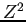 de un pÃxel negro (o blanco, dependiendo de la convención) de la imagen.
A continuación, definiremos algunas notaciones que serán utilizadas para definir posteriormente la erosión y la dilatación: nos referiremos con  a un conjunto en ,
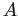 un elemento de
a un conjunto en ,
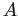 un elemento de  ,
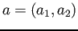 un conjunto vacÃo,
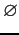 para denotar que
,
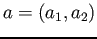 un conjunto vacÃo,
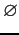 para denotar que  es un subconjunto de
es un subconjunto de  , 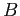 para indicar la intersección entre
, 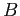 para indicar la intersección entre  y
y  (el conjunto de elementos que corresponde tanto a
(el conjunto de elementos que corresponde tanto a  como a
como a  ),
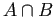 para indicar la reflexión del conjunto
),
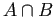 para indicar la reflexión del conjunto  ,
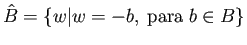 para indicar la traslación del conjunto
,
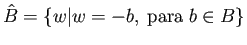 para indicar la traslación del conjunto  por
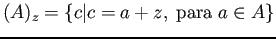 y 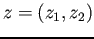 la notación de un conjunto.
por
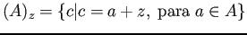 y 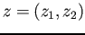 la notación de un conjunto.